Name: Math 241: Calculus & Analytic Geometry A
Exam 2
November 1 2002
There is always one moment in childhood when the door opens and
lets the future in.
- Graham Greene, The Power and the Glory.
Instructions: Show all work to receive full or partial credit. All University rules and guidelines for student conduct are applicable.
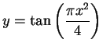
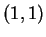
. Simplify your answer as much as possible.
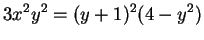
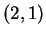
. Simplify your answer as much as possible.
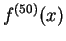
where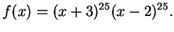
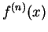
where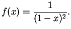
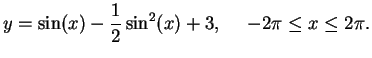
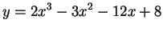
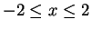
.